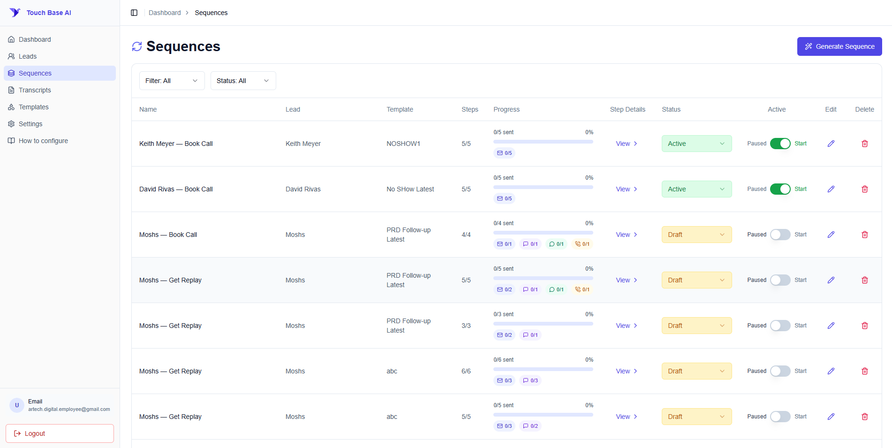
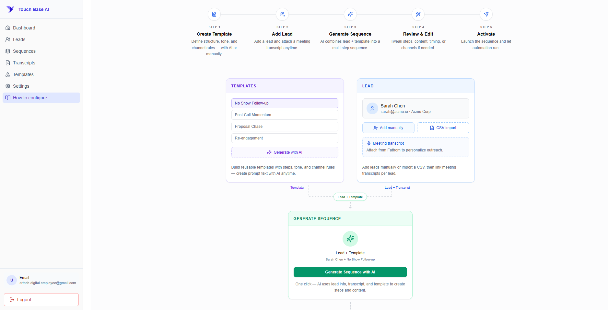

1
Import your leads
Upload a spreadsheet containing each lead's details. No complicated migration is required to get started.
First and last name
Email address
Phone number

Post-call follow-up
Import your leads, connect Fathom, select what happened on the call, and launch coordinated outreach across email, WhatsApp, SMS, and AI voice. Stay in front of every opportunity, without manually chasing every lead.
Built for agencies, consultancies, and service businesses that sell through discovery calls, demos, and proposals.
Select the call outcome
Checks whether they are still interested, and gives them a clear way to reschedule.
Sorry we missed you
shortly after
Reminder
next day
Rescheduling link
+2 days
Final check-in
+5 days
Runs until the lead schedules the next conversation to review the PRD, plan, or proposed solution.
Next step, summarised
same day
Reminder
+2 days
Short follow-up
+4 days
Call if still no response
+6 days
Stays present after the proposal without relying on someone remembering every follow-up.
Proposal follow-up
+2 days
Short check-in
+4 days
Reminder
+6 days
Request an update
+8 days
Decision and next step
+11 days
You define the strategy once. The system executes it consistently for every lead.

The gap
Most opportunities are not lost during the sales call. They are lost in the days that follow.
Tell you to follow up.
Tell you who the lead is.
Send messages.
But none of them connects what happened during the call with what should happen next.
The approach
Follow-Up AI turns each stage of your sales process into a reusable, multi-channel sequence. After a call, simply select the outcome.
Follow-Up AI then schedules the appropriate touchpoints across the channels you choose. Your team defines the strategy once. The system helps execute it consistently for every lead.
Watch it work
How it works
Upload a spreadsheet containing each lead's details. No complicated migration is required to get started.
Connect your Fathom account so your follow-up workflow can use the notes and context captured during the conversation.

Choose what happened, and the follow-up path follows from there.

Choose a predefined sequence or create your own: which channels to use, what messages to send, when each touchpoint should happen, and how long the follow-up should continue.

Follow-Up AI executes the scheduled sequence so leads continue hearing from you across multiple channels, not just through another email sitting in their inbox.


Channels
Use one channel, or coordinate several within the same sequence.
Detailed follow-ups, meeting recaps, proposal reminders, and next-step requests.
Continue the conversation through a channel that feels direct and personal.
Short reminders and simple calls to action that are easy to respond to.
An AI-powered follow-up call with a recording and transcript for future reference.
Scenarios
Each of these has a sequence behind it. Switch between them at the top of the page to see the touchpoints.
No-show
Automatically begin a sequence that checks whether they are still interested and gives them a clear way to reschedule.
See the sequence →Second meeting
Follow up after the discovery call until the lead schedules the next conversation to review the PRD, plan, or proposed solution.
See the sequence →Awaiting decision
Stay present after presenting the proposal without relying on someone from your team to remember every follow-up.
See the sequence →Positioning
CRMs help you store lead information. Email tools help you send emails. Follow-Up AI is designed for what happens between sales conversations. It combines:
So your follow-up reflects where the lead actually is in the sales process.
Origin
We originally created Follow-Up AI for our own agency.
We were managing leads in spreadsheets, holding discovery calls, preparing PRDs, presenting proposals, and manually reminding prospects to take the next step.
The problem was not knowing that we needed to follow up. The problem was doing it consistently, through the right channel, with the right context, for every opportunity.
Follow-Up AI turns that manual process into a repeatable system.
Pilot programme
We are inviting a limited number of agencies and service businesses to test Follow-Up AI using their real sales workflows. During the pilot, we will help you:
FAQ
No. It is a post-call follow-up automation platform. It can work with lead information imported from your existing spreadsheet without requiring you to replace your current sales system.
No. You decide which channels belong in each sequence. A sequence can use one channel or combine email, WhatsApp, SMS, and AI voice.
Yes. You can create separate sequences for no-shows, second-meeting scheduling, proposal follow-up, decision follow-up, and other stages of your sales process.
Fathom provides notes and context from the sales conversation, helping keep the follow-up connected to what was discussed during the call.
Yes. You decide when every touchpoint is scheduled and how long each sequence should continue.
The system can place an AI-powered follow-up call and provide a recording and transcript for reference.
The pilot is best suited for agencies, consultancies, and service businesses that generate leads, hold sales calls, send proposals, and need to follow up several times before receiving a decision.
The opportunity has not necessarily disappeared. It may simply be waiting for the next follow-up.